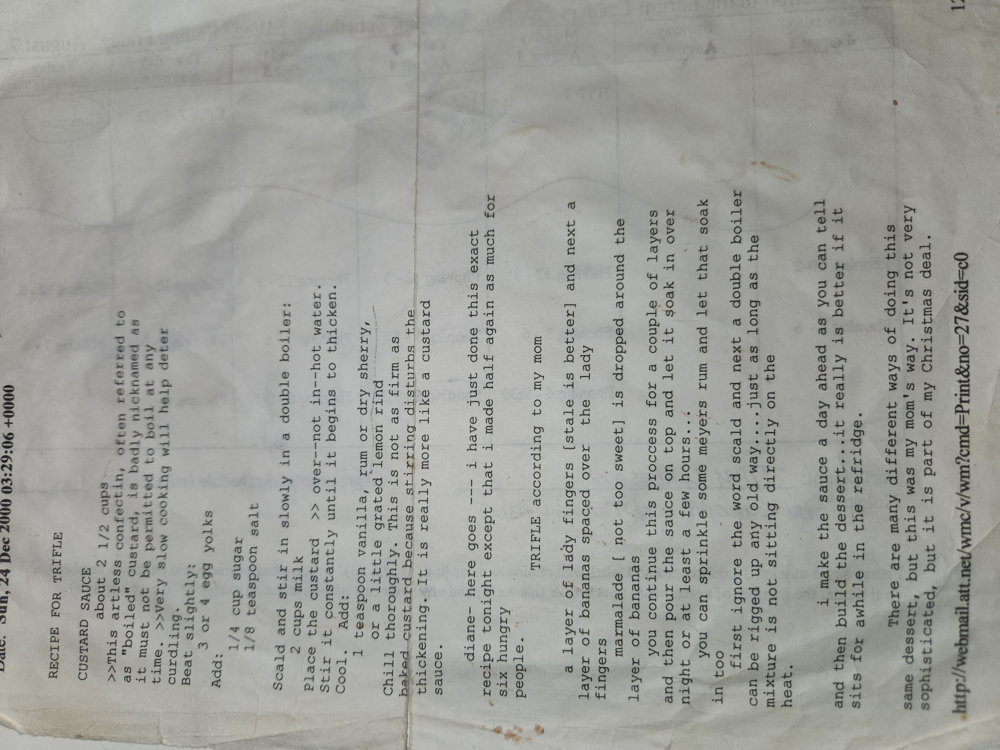

Trifle¶
Custard Sauce¶
This artless confection, often called “boiled custard,” must never actually be boiled.
Very slow cooking helps prevent curdling.
Ingredients
- About 2 ½ cups milk
- 3 or 4 egg yolks, slightly beaten
- ¼ cup sugar
- ⅛ teaspoon salt
- 1 teaspoon vanilla, rum, or dry sherry
- A little grated lemon rind
Directions
1. Scald the milk.
2. Stir it slowly into the egg yolks, sugar, and salt in a double boiler.
3. Place the custard over (not in) hot water. Stir constantly until it begins to thicken.
4. Cool.
5. Add vanilla, rum, or sherry, and lemon rind.
6. Chill thoroughly.
This isn’t as firm as baked custard since stirring disturbs the thickening.
It’s really more like a custard sauce.
Trifle (according to my mom)¶
Ingredients
- Ladyfingers (stale is better)
- Bananas, sliced
- Marmalade (not too sweet)
- Custard sauce (from above)
- Optional: Meyers rum
Directions
1. Lay down a layer of ladyfingers.
2. Add sliced bananas on top.
3. Drop marmalade around the bananas.
4. Repeat for a couple of layers.
5. Pour the custard sauce over everything.
6. Let it soak overnight or at least a few hours.
- You can sprinkle rum and let that soak in too.
Notes
- A double boiler can be rigged up any old way, just make sure the mixture isn’t sitting directly on the heat.
- It’s best to make the sauce a day ahead, then build the dessert and let it sit in the fridge.
- Really, it’s better if it sits awhile.
There are many different ways of doing trifle, but this was my mom’s way.
It’s not fancy, but it’s part of my Christmas tradition. 🎄
